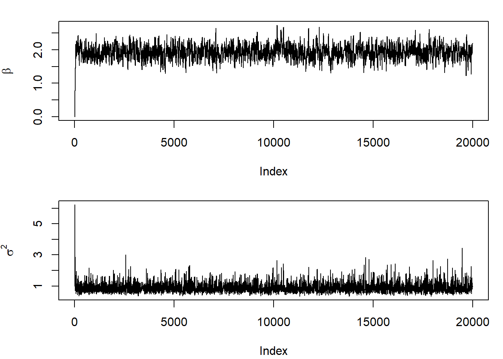
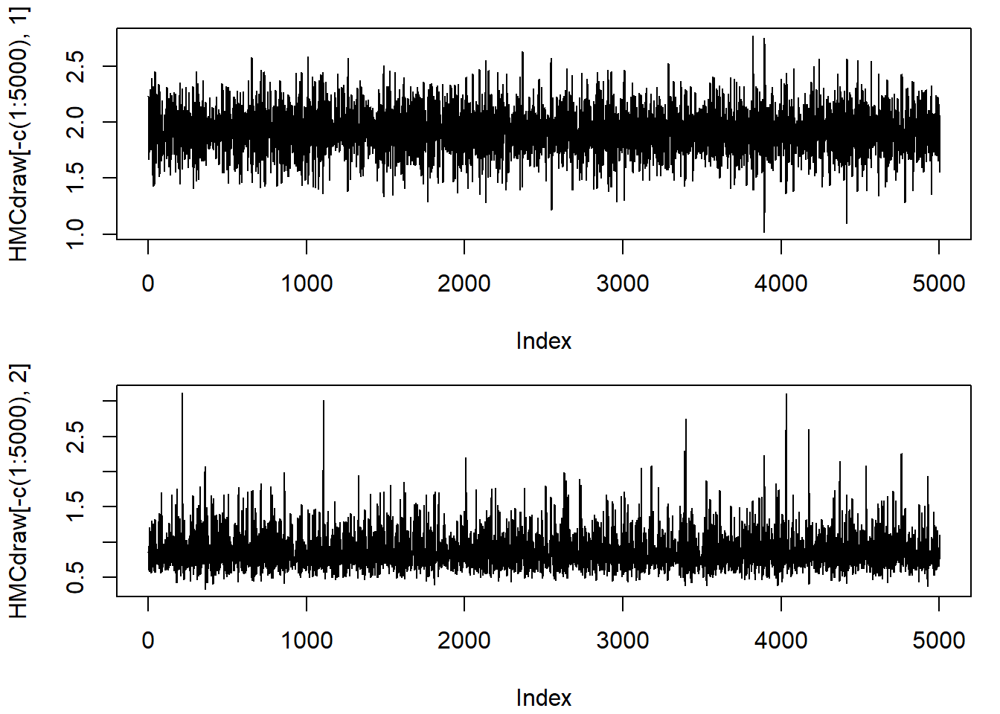

#### Metropolis-Hastings Algorithm ###### Datan <-20sumy <-40.4sumysq <-93.2ybar <- sumy / nysd <-sqrt((sumysq - n * ybar ^2) / (n -1))## Define function for posterior densityposterior <-function(beta, sigma.sq) {exp(-0.5* ((n +1) * beta ^2-2* beta * sumy +4+ sumysq) / sigma.sq) / (sigma.sq ^ (0.5* (n +1) +3))}## Define function for Metropolis-Hastings algorithmMHalgorithm <-function(L, initial, sd) { # L is the length of the Markov chain, including the burn-in period# initial is the initial state# sd is the standard deviation of the proposal distribution for beta chain <-rbind(c(initial), matrix(NA, L, length(initial)))for(t in1: L){# Propose a candidate beta.prop <-rnorm(n =1, mean = chain[t, 1], sd = sd) sigmasq.prop <-rexp(n =1, rate =1/ chain[t, 2])# Calculate the ratio numerator <-posterior(beta = beta.prop, sigma.sq = sigmasq.prop) *dnorm(x = chain[t, 1], mean = beta.prop, sd = sd) *dexp(x = chain[t, 2], rate =1/ sigmasq.prop) denominator <-posterior(beta = chain[t, 1], sigma.sq = chain[t, 2]) *dnorm(x = beta.prop, mean = chain[t, 1], sd = sd) *dexp(x = sigmasq.prop, rate =1/ chain[t, 2]) r <- numerator / denominator# Generate U(0, 1) u <-runif(1, 0, 1)# Updateif(u <= r) { chain[t +1, ] <-c(beta.prop, sigmasq.prop) } else { chain[t +1, ] <- chain[t, ] } } chain}## Perform MCMC samplingset.seed(12345)MH <-MHalgorithm(L =20000, initial =c(0, 1), sd =0.2) # sd is a tuning parameterpar(mfrow =c(2, 1), mar =c(4.1, 4.1, 1.5, 1)) plot(MH[, 1], type ="l", ylab =expression(beta)) plot(MH[, 2], type ="l", ylab =expression(sigma^2))

1.2.2 Gibbs Sampler
#### Gibbs Sampler ###### Generate some fake dataset.seed(12345)Mu <-rnorm(1, 0, 2) Lambda <-rexp(1, rate =2) Data <-rnorm(500, mean = Mu, sd =1/sqrt(Lambda)) ## Define function for Gibbs samplerGibbs <-function(L, initial, data, mu0, lam0, b0){ # L is the length of the Markov chain, including the burn-in period# initial is the initial state# data is our data# mu0, lam0 and b0 are the hyperparameters## Information from data n <-length(data) s <-sum(data) s2 <-sum(data ^2) ## Initiate mu and lambda mu <-numeric(1+ L) mu[1] <- initial[1] lambda <-numeric(1+ L) lambda[1] <- initial[2] ## Run MCMC in a for loopfor(t in2: (1+ L)){ ## Generate mu given lambda mean_norm <- (s / lam0 + mu0 / lambda[t -1]) / (n / lam0 +1/ lambda[t -1]) sd_norm <-1/sqrt(lambda[t -1] * lam0 * (n / lam0 +1/ lambda[t -1])) mu[t] <-rnorm(n =1, mean = mean_norm, sd = sd_norm) ## Generate lambda given mu lambda[t] <-rgamma(n =1, shape = n /2+1, rate = b0 +0.5* (s2 -2* mu[t] * s + n * mu[t] ^2)) } ## Return the chain chain <-cbind(mu, lambda) colnames(chain) <-c("mu", "lambda") return(chain) } ## Run Gibbs samplerset.seed(123456) GibbsEx <-Gibbs(L =10000, initial =c(0, 1), data = Data, mu0 =1, lam0 =1, b0 =1) ## Plot resultspar(mfrow =c(2, 1), mar =c(4.1, 4.1, 1, 1)) plot(GibbsEx[, "mu"], type ="l", ylab =expression(mu)) plot(GibbsEx[, "lambda"], type ="l", ylab =expression(lambda))
grad_logpi(beta =0.1, sigma.sq =0.3, n =20, sumy =40.4, sumysq =93.2)
[,1]
[1,] 127.6667
[2,] 451.2778
## Define function for HMCHMC <-function(n, x0, n.obs, sumy, sumysq, logpi, grad_logpi, sd_phi, epsilon, L) { # n is the length of the Markov chain, including burn-in period # x0 is the initial state# n.obs is the number of observations# logpi is the function to calculate the posterior# grad_logpi is the function to calculate the gradient of the posterior# sd_phi is the vector of standard deviation used to generate the momentum from a normal distribution with zero mean# epsilon is the step size in Leapfrog method# L is the number of steps in Leapfrog method## Initiate the Markov chain chain <-rbind(x0, matrix(NA, n, 2)) ## Generate random number using HMC in a for loopfor(t in1: n){ ## Draw momentum from normal phi0 <-c(rnorm(1, mean =0, sd = sd_phi[1]), rnorm(1, mean =0, sd = sd_phi[2])) #-------------------------------------# # Leapfrog to update x x <- chain[t, ] # Current Hamiltonian H <--logpi(beta = x[1], sigma.sq = x[2], n = n.obs, sumy, sumysq) -dnorm(phi0[1], mean =0, sd = sd_phi[1], log =TRUE) -dnorm(phi0[2], mean =0, sd = sd_phi[2], log =TRUE) # Make a half step for momentum at the beginning phi <- phi0 + epsilon *grad_logpi(beta = x[1], sigma.sq = x[2], n = n.obs, sumy, sumysq) /2# Alternate full steps for position and momentum for (i in1: L){ # Make a full step for the position x <- x + epsilon *diag(1/ sd_phi, 2) %*% phi # Make a full step for the momentum, except at end of trajectory if (i != L) { phi <- phi + epsilon *grad_logpi(beta = x[1], sigma.sq = x[2], n = n.obs, sumy, sumysq) } } # Make a half step for momentum at the end. phi <- phi + epsilon *grad_logpi(beta = x[1], sigma.sq = x[2], n = n.obs, sumy, sumysq) /2#-------------------------------------# # Negate momentum at end of trajectory to make the proposal symmetric phistar <--phi # Proposed Hamiltonian Hstar <--logpi(beta = x[1], sigma.sq = x[2], n = n.obs, sumy, sumysq) -dnorm(phistar[1], mean =0, sd = sd_phi[1], log =TRUE) -dnorm(phistar[2], mean =0, sd = sd_phi[2], log =TRUE) # Metropolis ratio ratio <-exp(H - Hstar) # Accept or reject the state at end of trajectory, returning either # the position at the end of the trajectory or the initial position if (runif(1) < ratio){ chain[t +1, ] <- x } else { chain[t +1, ] <- chain[t, ] } } return(chain)}## Run HMCset.seed(12345)HMCdraw <-HMC(n =10000, x0 =c(0, 0.6), n.obs =20, sumy =40.4, sumysq =93.2,logpi = logpi, grad_logpi = grad_logpi, sd_phi =c(1.5, 1.5), epsilon =0.05, L =20) ## Plot resultspar(mfrow =c(2, 1), mar =c(4.1, 4.1, 1, 1)) plot(HMCdraw[-c(1:5000), 1], type ="l") plot(HMCdraw[-c(1:5000), 2], type ="l")

1.3 Rao-Blackwellization
## Our data## Generate some fake dataset.seed(12345)Mu <-rnorm(1, 0, 2) Lambda <-rexp(1, rate =2) N <-500Data <-rnorm(N, mean = Mu, sd =1/sqrt(Lambda)) ## Define function for Gibbs samplerGibbs <-function(L, initial, data, mu0, lam0, a0, b0){ # L is the length of the Markov chain, including the burn-in period# initial is the initial state# data is our data# mu0, lam0, a0, and b0 are the hyperparameters## Information from data n <-length(data) sumx <-sum(data) sumx2 <-sum(data ^2) ## Initiate mu and lambda mu <-numeric(1+ L) mu[1] <- initial[1] lambda <-numeric(1+ L) lambda[1] <- initial[2] ## Run MCMC in a for loopfor(t in2: (1+ L)){ ## Generate mu given lambda normal.mean <- (lam0 * mu0 + lambda[t -1] * sumx) / (lam0 + n * lambda[t -1]) normal.var <- lam0 + n * lambda[t -1] mu[t] <-rnorm(1, normal.mean, 1/sqrt(normal.var)) ## Generate lambda given mu bn <- b0 +0.5* sumx2 - sumx * mu[5] +0.5* n * mu[5]^2 lambda[t] <-rgamma(n =1, shape = a0 + n /2, rate = bn) } ## Return the chain chain <-cbind(mu, lambda) colnames(chain) <-c("mu", "lambda") return(chain) } ## Run Gibbs sampler multiple timesa0 <-1b0 <-1Rep <-1e03Naive <- RB <-numeric(Rep) for(r in1: Rep){ MuLambda <-Gibbs(L =1000, initial =c(0, 1), data = Data, mu0 =1, lam0 =1, a0 = a0, b0 = b0)## Discard burn-in period MuLambda <- MuLambda[-c(1:500), ]## Naive MC Naive[r] <-mean(MuLambda[, 2]) ## Rao-Blackwell Bn <- b0 +0.5*sum(Data ^2) -sum(Data) * MuLambda[, 1] +0.5* N * (MuLambda[, 1] ^2) RB[r] <-mean((a0 + N /2) / Bn) } ## Compare results with and without Rao-Blackwellmean(Naive); var(Naive)
[1] 0.289172
[1] 1.992623e-06
mean(RB); var(RB)
[1] 0.289427
[1] 1.290195e-09
1.4 Stan
Suppose that \(X_{i}\mid\theta\sim\text{Bernoulli}\left(\theta\right)\) and \(\theta\sim\text{Beta}\left(a_{0},b_{0}\right)\). We load data
load("Bernoulli.RData")
## Step 1: create Stan program #### It has three blocks: data, parameters, model betabinomial =" data { int<lower=0> N ; // Number of Bernoulli variables int<lower=0, upper=1> y[N] ; // integer valued y of length N }parameters { real<lower=0, upper=1> theta ; // success probability }model { theta ~ uniform(0, 1) ; // prior y ~ bernoulli(theta) ; // likelihood } "## Step 2: Posterior simulation using Stan ## It takes time the first time, because the code needs to be compiled first. library(rstan) NUTS <-stan(model_code = betabinomial, data =list(y = Success, N =20), iter =5000, # the length of each Markov chain, including warmup warmup =5000/2, # default is 50% is burn-in thin =1, # 1 means that no thining is donechains =4)
## Number of divergent transitions## It occurs if curvature of posterior is large such that it is difficult to exploreget_num_divergent(NUTS) # Should vanish if control = list(adapt_delta) goes to 1
[1] 0
In fact, you get many summaries from
print(NUTS)
Inference for Stan model: anon_model.
4 chains, each with iter=5000; warmup=2500; thin=1;
post-warmup draws per chain=2500, total post-warmup draws=10000.
mean se_mean sd 2.5% 25% 50% 75% 97.5% n_eff Rhat
theta 0.32 0.00 0.10 0.15 0.25 0.31 0.38 0.52 3883 1
lp__ -14.26 0.01 0.71 -16.28 -14.42 -13.99 -13.81 -13.76 3909 1
Samples were drawn using NUTS(diag_e) at Tue Feb 4 10:05:30 2025.
For each parameter, n_eff is a crude measure of effective sample size,
and Rhat is the potential scale reduction factor on split chains (at
convergence, Rhat=1).
If we let permuted = TRUE, then we have a vector. Each chain has length 5000 where 2500 will be discarded as burn.in. We have in total 4 chains, then there will be 4 * 2500 left.
PostDraw <-extract(NUTS, permuted =TRUE)$theta
To make posterior inference. we can use PostDraw directly.
If we want to specify the priors ourselves, it is possible to do so, but not very flexible. For example, if we let autoscale = FALSE, we can switch off the internal adjustment.
Fit <-stan_glm(bill_length_mm ~ flipper_length_mm + body_mass_g, # our model family =gaussian(), # distribution of response prior =normal(location =c(0, 0), scale =c(2.5, 2.5), autoscale =FALSE), prior_aux =exponential(rate =1, autoscale =FALSE), # Prior for sigma data = penguins)
However, the prior is set on \(\sigma\), not \(\sigma^{2}\). Hence, it is not really possible to use the inverse gamma prior. Further, as the Jeffreys-Lindley Paradox, we cannot use a proper prior to approximate an improper prior. The package only uses the independent prior for the regression coefficients.
Suppose that we want to tune the above code. I want to change the prior, change the number of chains, and the length.
Fit <-stan_glm(bill_length_mm ~ flipper_length_mm + body_mass_g, # our model family =gaussian(), # distribution of response prior =student_t(df =3, location =c(0, 0), scale =c(2.5, 2.5), autoscale =FALSE), prior_aux =exponential(rate =1, autoscale =FALSE), # Prior for sigma chains =4, iter =1e04, warmup =1e04/2, # Pass to rstandata = penguins)